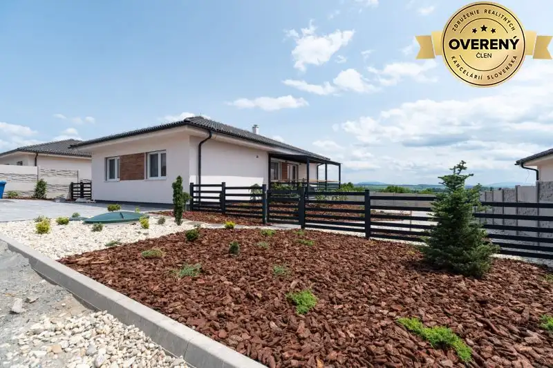
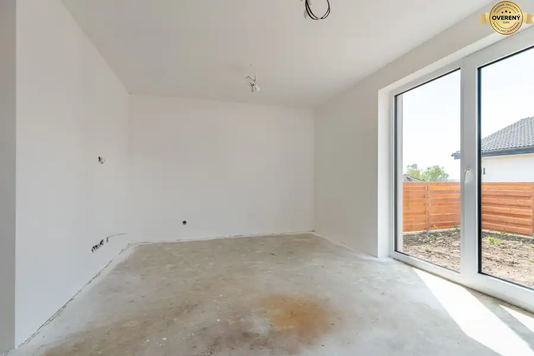
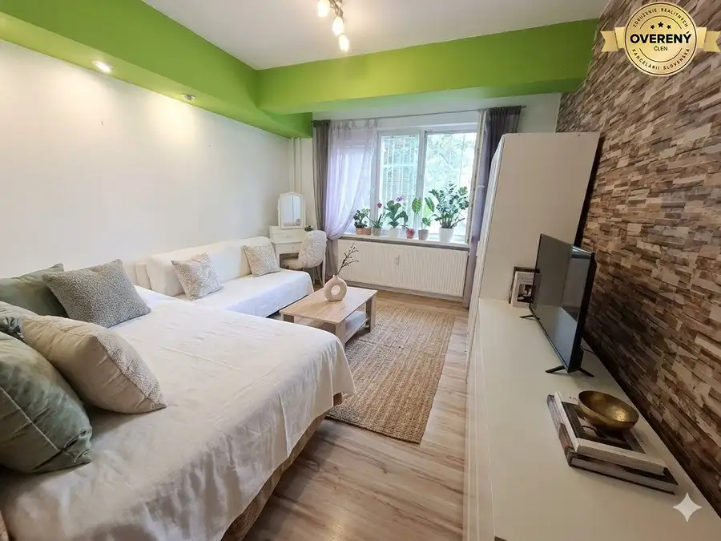
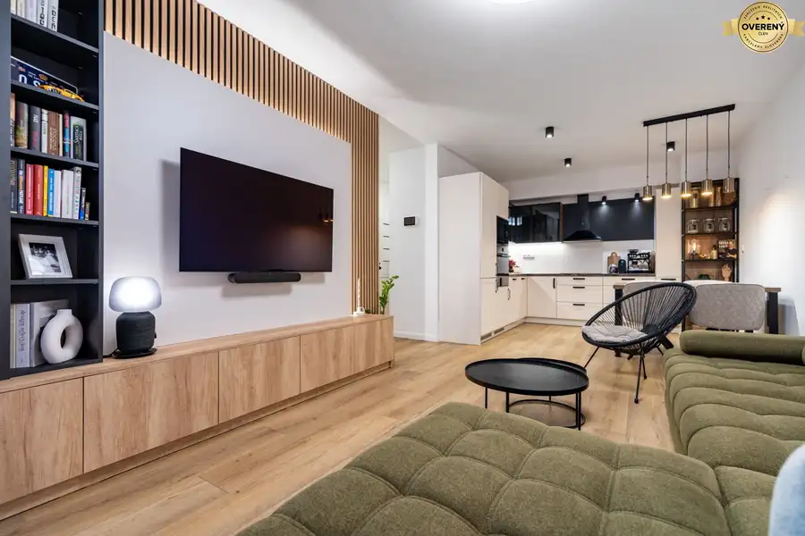
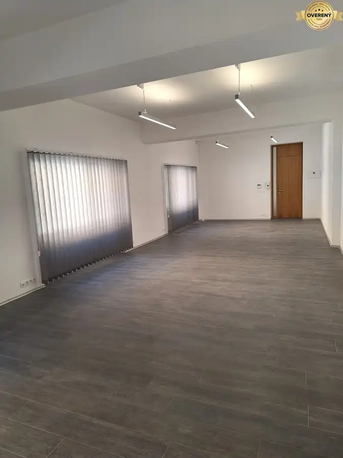
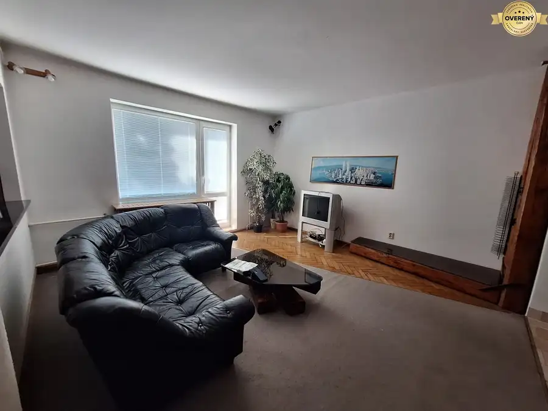
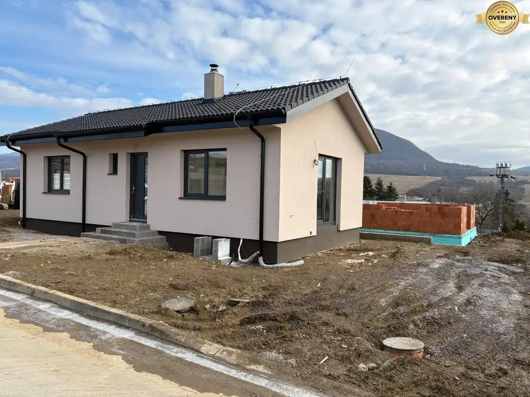
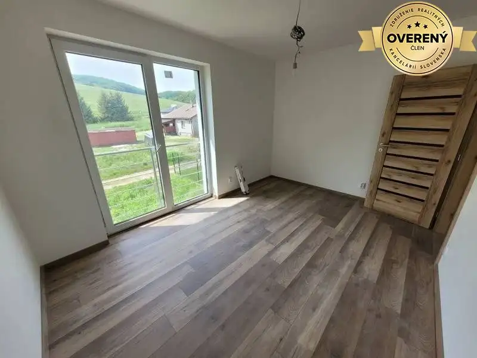

Aktuálna ponuka
8 nehnuteľností, predovšetkým byty, rodinné domy. Každá má vlastnú stránku s fotkami, popisom a mapou.
Prezrieť ponukuNikola JanokováRealitná maklérka
Realitná maklérka · Staviame Bývanie
Predaj a prenájom nehnuteľností · Prešov, Košice, Sever




Byt10 245 000 €Ponúkame na predaj moderný 2 - izbový byt, novostavba, Košice mestská časť Vyšné Opátske, Košice 2-izbový54 m²1. podlažie Ponúkame na predaj nadštandardný 2-izbový byt v novostavbe na Panoráme v Košiciach. Nachádza sa na prvom poschodí s rozlohou 54 m2, ktorý dopĺňa…
Nebytové priestory10 Cena dohodouPonúkame na prenájom kancelárske priestory, Prešov, Hlavná Prešov 30 m²2. podlažie Ponuka voľných priestorov: - Priestor (kancelária) o výmere 30 m2 - cena nájmu 12,00EUR/m2 bez DPH - energie 104,17 bez DPH / 125,00EUR s DPH -…
Byt9 Cena dohodouNa prenájom 3 izbový byt, ul. 17. Novembra, Prešov Prešov 3-izbový62 m²2. podlažie Ponúkame na prenájom 2 izbový byt, vo vyhľadávanej lokalite, v blízkosti centra mesta, ul. 17. novembra, Prešov. Celková rozloha bytu je 62 m2 a…
Rodinné domy5 Cena dohodouNa prenájom rodinný dom, novostavba, bungalov, Prešov, Košice,Mirkovce Mirkovce 4-izbový64 m² Ponúkame na prenájom 4 - izbový rodinný dom s pozemkom. Nehnuteľnosť sa ponúka medzi mestami Košice a Prešov v novovybudovanej lokalite - časť Dlhé…
Rodinné domy10 219 000 €Ponúkame na predaj rodinný dom, Košice - okolie, Prešov - okolie Sever, Košice 63 m² IBV Panoráma Drienovská Vám ponúka na predaj 8x 4 izbový 2-podlažný rodinný dom v Drienovskej Novej Vsi. Projekt spája prírodu s moderným bývaním v…Tomuto výberu zatiaľ nezodpovedá žiadna ponuka. Napíšte mi, čo hľadáte.
Volám sa Nikola Janoková. Som realitná maklérka kancelárie Staviame Bývanie a pôsobím predovšetkým v lokalitách Prešov, Košice, Sever a Mirkovce (Prešovský kraj).
8 nehnuteľností, predovšetkým byty, rodinné domy. Každá má vlastnú stránku s fotkami, popisom a mapou.
Prezrieť ponukuPrešov, Košice, Sever, Mirkovce a okolie. Ponuku si môžete prezrieť podľa lokality.
Nehnuteľnosti v lokaliteOdhad trhovej ceny, príprava prezentácie, obhliadky, zmluvy a odovzdanie nehnuteľnosti.
Dohodnúť stretnutieNa čo sa pýtate najčastejšie, skôr než sa stretneme.
Odhad trhovej ceny vychádza z aktuálnych ponúk a predajov v lokalite, nie z cenníkových tabuliek. Podmienky Vám poviem pri prvom telefonáte.
Najprv obhliadka a odhad ceny, potom príprava prezentácie (fotografie, popis, inzercia), obhliadky so záujemcami, rezervačná zmluva, kúpna zmluva, návrh na vklad do katastra a odovzdanie nehnuteľnosti. O každom kroku viete vopred.
Najrýchlejšie cez WhatsApp alebo telefón. Termín stretnutia alebo obhliadky dohodneme podľa Vás.